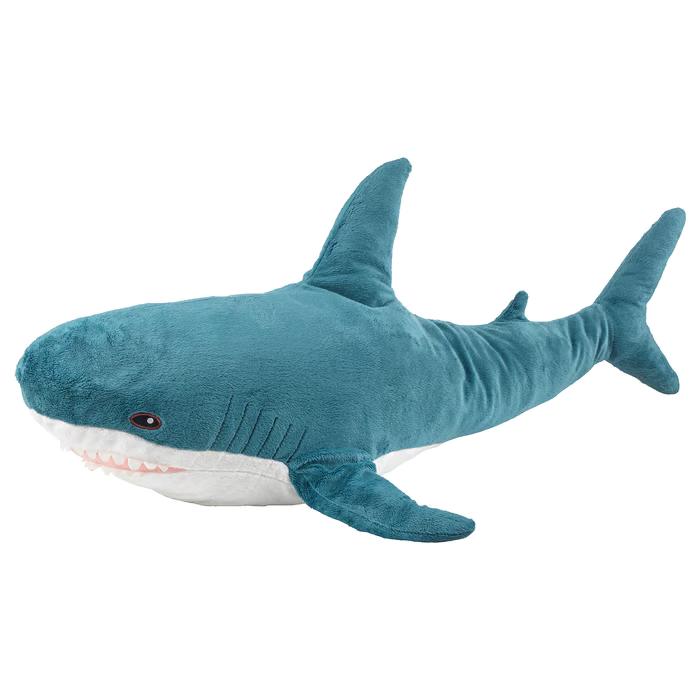

About the author:
I find about the author pages to be kind of boring, so here's a fun little "game" where you can drag and drop Blåhaj to different spots on the page. Can you find Blåhaj's favourite spot? I might add more to this just for fun once the main project is complete.
